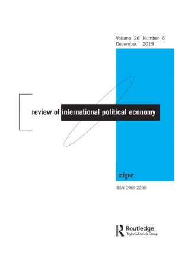
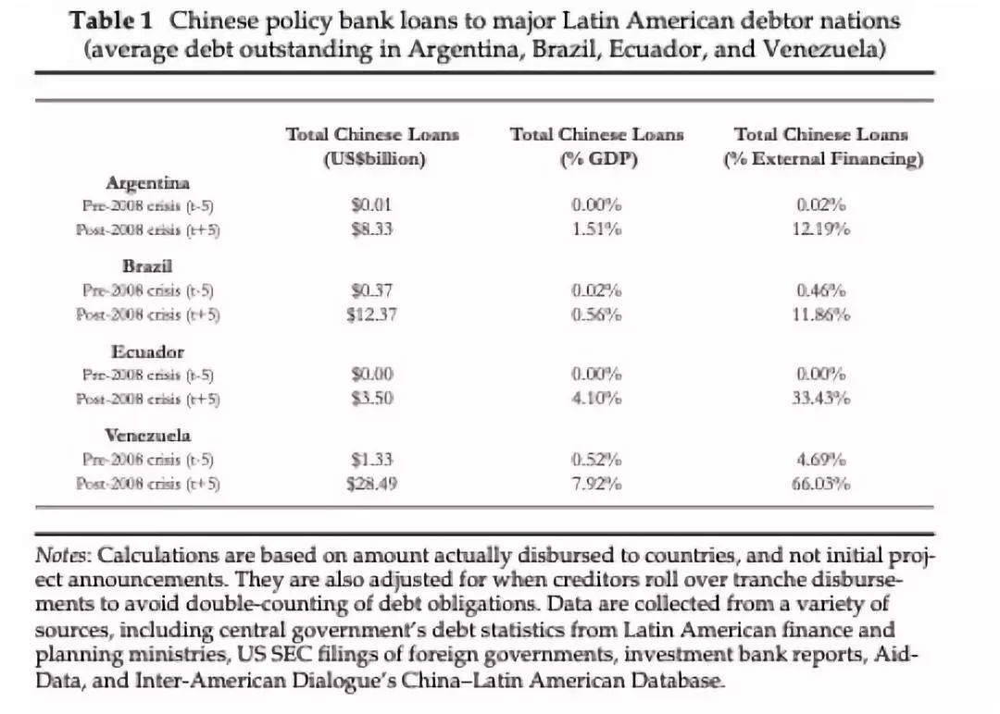
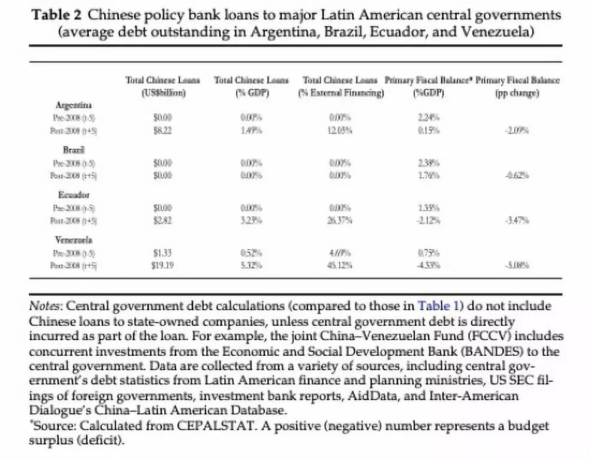

收录于合集

作品简介
【作者】 Stephen B. Kalpan是美国乔治华盛顿大学政治科学系与国际事务系的副教授。研究方向是比较政治经济学，特别是国际金融与发展的政治经济学、宏观经济政策制定的政治经济学。近年来他主要关注中国在西半球影响力的提升，以及拉丁美洲政治。
【编译】 蔡宇（国政学人编译员、中国人民大学国际关系学院硕士生）
【校对】 周义元 （中国社会科学院拉丁美洲研究所博士生）
【审核】 曹鹏鹏、金磊
【排版】 赵怡雯 【来源】 Kaplan,S.B.(2016).Banking unconditionally: the political economy of Chinese finance in Latin America.Review of International Political Economy , 23 (4),643-676. doi:10.1080/09692290.2016.1216005
期刊介绍

Review of International Political Economy, 国际政治经济学评论，创立于1994年，是一本以国际政治经济学为主要内容的同行学术评审杂志。
2018年的影响因子为2.800。
无附加条件的投资：
中国在拉丁美洲投资的政治经济学
Banking Unconditionally:
The political economy of Chinese finance in Latin America
文章导读
一 ** 、 导言** **** ****
Introduction ****2008年全球金融危机后，中国国有资本逐渐崛起并开始全球扩张。在美国缩减出口的同时，中国不断寻求第三市场投资以创造新的贸易机会。中国通过在基础设施、建筑业和重型开采工业的投资，保障自身原材料和能源供应的同时，获得了新的出口市场。与此同时，与中国的经济相互依存也使拉美国家多了新的资本来源。 中国国有资本与传统西方“市场导向资本”(market-based capital)并无本质区别，但中国资本更愿意追求长期回报。对于某些债务国，相比于频繁受到市场导向资本的短期波动影响及其紧缩政策要求，这种增加当下不确定性以期在未来获得更大回报的理念有更大的吸引力。此外，中国承诺不干涉内政，意味着中国耐心资本愿意承担新兴市场的商业周期风险。本文认为，中国成为拉丁美洲新的债权国让拉美能够重新从全球获得“耐心资本”(patient capital)融资，使初级产品出口的繁荣消退后，拉丁美洲得以寻找新的融资途径。本研究发现政府对国家经济的干预程度存在相当大的差异，为全球化、新自由主义及拉美左翼等领域的研究提出新的见解，同时也为中国在拉丁美洲崛起的研究提供新视角，并对中国和美国经济力量的转移进行了系统化的比较分析。
二、 理论框架：耐心资本增强政策灵活性
Theoretical Framework: Patient Capital Boots Policy Flexibility
****全球化理论的学者往往就经济相互依赖如何强迫政府降低政策自主性进行讨论。学者间存在一个共识，认为流动资本会施压政府采取自由放任的经济政策。趋同派认为全球化使国家间出现
“竞次 （race to the bottom）”，导致丧失抗拒资本家利益的权力；分化派对政府能力具有信心，预期政府能增强国家能力，应对全球化产生的混乱。
作者认为，国家驱动的资本主义往往具有更 “耐心”的特征。
****国有资本是全球金融体系中耐心资本的一种重要形式。与私人市场资本不同，耐心资本以周期长远和维持长期关系著称。与频繁波动的市场导向资本 (market-
based
capital)相对，传统上，耐心资本的主要构成是基于个人或地缘政治联系的国际银行贷款及全球发展援助。国有债权人无需遵循短期债务评估标准，因为即使债务人面临财务困境，他们的贷款收益也有政府的隐性担保做背书。此外，债权国政府往往紧密参与制订全球行动战略，导致商业和政治的界限变得模糊。例如中国为了新兴市场南南合作的发展机遇，往往愿意承担新兴市场的脆弱性，关注长期收益。
国有资本的特性转变了传统全球经济相互依赖和国家政策自主性的关系。
****债权国的长期视角和地缘政治考量降低了国有资本退出债务国的可能性。当短期资本退出的威胁减少，债务国政府将具有更多的政策空间。政府更不容易遭受紧缩性信贷冲击，从而避免了融资成本骤增，也使他们能提高公共开支回应选民诉求。国有资本减轻了全球化对各国政府的压力，使拉丁美洲政客能更积极地回应社会诉求，改变全球化时代的市场和社会间传统的紧张关系。
三、 拉丁美洲国家的政策空间 ****
Latin America’s room to maneuver ****拉丁美洲的历史上左翼政府屡见不鲜。但为什么在经历 2007～2008年经济危机和随后的大宗商品价格回落后，拉丁美洲的左翼政权仍如此稳定？在全球债权国对经济民粹主义忍耐度下降的十年，厄瓜多尔的科雷亚政权，委内瑞拉的查韦斯和马杜罗政权，阿根廷的基什内尔等左翼政权是如何保持稳定的？为什么有的左翼政府愿意遵循经济学家建议，有的选择深度干预经济？ 国家的政策空间往往反映出政府的财政空间，或者政府可用资源弥补财政亏空。 对面临再分配压力的发展中国家政府而言，政权存续的关键在于是否有充裕的财政空间支撑民众对工作、工资、公共服务等公共福利提升的诉求。为了回应这些国内政治议程，发展中国家政府反而相比富裕国家借了更多外债。同时，欠发达的资本市场和税收体制，使得发展中国家的国内财政能力本身弱于发达国家。缺少外部贷款将减弱发展中国家政回应国内政治议程的能力，也使他们无法通过增加财政开支进行逆周期操作应对经济冲击。例如，2008年美国采取的大规模财政支出以应对经济危机，但对于危机重重的发展中国家来说这是更加困难的。
四、 从私人资本到公共债权人：紧缩时期的结束？ ****
From private capital to public creditor: an end to austerity? **** 尽管历史上拉美国家财政紧缩的模式不断重演，作者仍期待像中国一样的单一信用主权国家所发行的耐心资本将增加债务国操作的空间。 比起经济下行时期采取紧缩政策吸引债券市场资本的做法，债务违约或拒绝遵循市场条件使政府能更加自由地将开支用于政治优先事务。 中国信贷和国家政策导向的联系牵涉到国际和国内两个层面的问题。 一方面，作者认为中国国际借款(international lending)的出现对主权债务融资的结构产生了影响，增加了债权国投资的地缘政治考量。这种关系取决于国内资本流动渠道。当外来资本直接流入债务国中央政府时，债务国政府将把它看作财政收益，并增加其财政支出。相反地，当这些贷款流入私人或具有自主性的国有企业时，中央政府并没有从债务中直接受益。
五、 国际视角：新的全球债权人的出现
The international dimension: an emergence of a new global creditor **** 国家间借贷 (state-to-state lending) 使政治和经济紧密连成一体。 作者认为，尽管中国发展性金融投资与官方发展援助(ODA)不同，但中国的银行贷款往往聚焦于自然资源与能源供应充足的发展中国家，以帮助中国保障海外能源和自然资源安全。同时，中国对外投资也是调节中国经济“新常态”，为中国公司和工人在基础设施、建筑、钢铁和能源等产业创造发展机遇的手段。 同时，公共物品供给是中国对外经济政策的工具之一，旨在减少发展中国家的基础设施赤字，同时推动中国的出口和投资的增长。 ****在这一政策指导下，中国对拉丁美洲投资在2015年达到近300亿美元。这些投资推动两大重要的国家目标：一是降低中国进口贸易的运输成本(如大豆贸易)，二是将投资引导转变为消费驱动的国内经济转型产生的剩余产能投资到国外市场。 作者认为，与私有资本相比，国家间融资降低了资本外逃 (Capital flight) 发生的可能。 传统的私有资本给债务国政府更小的操纵空间，因为一旦不满足市场指标可能引起债务国资本外流和信用风险。相反，中国银行并不采用西方风险评估标准，而将国家利益作为其底线，追求中国的在全球贸易与投资网络的长期融入。这种经济和政治目标交融的视角产生了对国家主权风险的不同理解方式。因此与西方投资者和金融机构相比，中国投资者和金融机构提出的政策没有严格的短期条件，中国的机构也愿意为那些因不符合西方治理标准而被全球市场排斥的国家提供融资和直接投资。如果不施加贷款条件，那么中国将如何缓冲潜在的信用风险呢？作者认为，国家借贷通过两种方式保障自身安全：一是大宗商品担保的贷款，以未来大宗商品的出口做抵押，二是与国有企业签订保障合同(guaranteed contract)。通过商业联系而不是政策条件降低面临债务违约的风险，国有资本得以在全球促进中国的海外投资利益。国有企业通过获取未来扩展中国承包商、供应商和工人网络的承诺来承保信用风险。政策性银行的融资取代了币值低估成为促进出口的主要工具。
六、 国内视角：当地投资渠道 ****
The domestic dimension: the local investment channel ****这种信用危机管理的长期视角是否会立刻导致债务国政府寻求更大的预算自主权？ 作者认为这种财政自由最终依赖于债务国市场和国家的结构，特别是债务国政府是否充当贷款的中间人。 目前中国对拉美国家的贷款主要通过两大渠道流入。第一，他们被以公共融资的方式直接支付给债务国政府；第二，贷款将被授予取得政府授权提供公共服务的公司。作者预计当中国投资直接流入当地政府时，政府可以增加他们的财政空间和财政能力，广泛投资财政项目。与此相反，当财政资金流入中央政府之外的公司实体时，政府的财政自主性并不直接增加，而从中国驱动的经济增长中间接受益。在本文中，作者试图就中国贷款、财政政策和债务积累进行分类讨论。 中国投资扩展的理论前提，与食利国家(rentier- state)研究不谋而合。食利国家的研究认为，自然资源繁荣助长了政府不稳定的高额支出。(Karl,1997; Ross,1999; Weyland, 2009)。在大宗商品不稳定的2008年，中国贷款的进入帮助拉美国家延迟调整期，并为其的财政开支稳定基础。假如没有中国投资，拉美政府的预算弹性将大大降低。例如在巴西，中国银行贷款往往流入成功取得巴西政府竞标的企业，并推动其与中国国有企业合作。总之，作者认为中国对信用风险管理的长期视角，使中国双边贷款不会展现出与市场导向融资(market- base finance)同样的资本流动不稳定性。当中国资本被直接支付给债务国政府时，它将增加该政府施政空间。
七、 比较案例研究 ****
Comparative Case Evidence **** **为检验上述理论的准确性，作者对巴西和委内瑞拉进行比较案例研究，聚焦 2007～2008年国际金融危机前后，中国双边贷款对拉美国家财政政策的影响。**巴西与委内瑞拉两国都是总统制、中产阶级居多的南美洲国家，也是中国在拉美的两大债务国。同时作者也考察阿根廷和厄瓜多尔，观察这一理论能否在更大范围中适用。上述四个国家都是混合市场经济导向(mixed- market orientation)，因此相较于自由市场经济更有可能发生政府与市场间的财政转移。 **尽管这四个国家存在共性，但他们的国内公共投资结构存在不同，这也为前文 “当地投资渠道”的不同提供比较案例支撑。**巴西等国家的公共投资，如道路、铁路、火车、港口和能源基础设施往往由私有资本投资，呈现出自由市场的特征。 表 1中国政策银行对拉丁美洲主要债务国贷款情况 **** （阿根廷、巴西、厄瓜多尔和委内瑞拉平均未支付债务）  表2 中国政策银行对拉丁美洲国家中央政府的贷款 **** （阿根廷、巴西、厄瓜多尔和委内瑞拉平均未支付债务）  这些融资在拉丁美洲各国内是如何被分配的？ 表 2呈现了四个债务国国内融资渠道 间的分化。 ****当中国贷款占拉美国家外来公共金融的比例上升时，拉美国家的财政赤字相应增加。在金融危机发生前五年，阿根廷、厄瓜多尔和委内瑞拉保持盈余状态。在金融危机发生后，上述国家的财政盈余变为财政赤字。然而巴西中央政府实际上基本未收到直接融资，因为贷款的主要流向是私营公司采购。在巴西，中国投资主要流向私营企业，外来公共融资占巴西国家外来融资的 5%以下，财政赤字相对较小。观察金融危机五年后中国融资在巴西国内的流向，巴西并未充当外来融资的中间协调者，因此巴西财政的灵活性并未由于中国资本的到来而显著增强。通过下文对委内瑞拉与巴西案例的对比分析，作者试图评估国家直接融资对拉美国家政策自主性的影响。通过反事实推理，作者认为中国对拉美的国家间融资投资补偿了2008年全球金融危机后拉美国家商品贸易收入的下降，增大了政府财政的自主性。
八、 委内瑞拉：以中国国家间借款补偿大宗商品价格回落 ****
Venezuela: Chinese state-to-state lending offsets commodity corrections ****委内瑞拉往往被当作资源诅咒的典型代表。在大宗商品价格下行期，委内瑞拉政治家依靠国际市场的债权国和 IMF维持自身财政的可调节性。中国外来融资拯救了委内瑞拉政府的财政危机。上一次金融危机后的商品调整期(commodity correction)使委国政府财政紧缩，在此背景下，每年190亿美元的中国政府对委内瑞拉政府直接贷款占委内瑞拉外来金融的近乎一半，投资主要集中于大型基础设施项目。此外，中国融资减轻了国际投资市场对委内瑞拉的限制，提升了委内瑞拉的政策灵活性。如果加上中国对委内瑞拉石油公司(PDVSA)的资金支持，委内瑞拉当年财政赤字将达到GDP的6.3%，不计该笔资金的赤字率为4%。如果没有中国的国家间融资援助，难以想象委内瑞拉可以在大宗商品价格回落时采取如此大规模的国家干预。2013年马杜罗上台后继续维持与中国的“石油换贷款”项目，以便为自身财政支出的获得金融支持，使委内瑞拉在后金融危机时代保持财政赤字。
九 、 巴西：私人企业合约降低了政策自由度 ****
Brazil: private procurement reduces policy discretion ****中国的无附加条件的金融合作模式增大了委内瑞拉等国家的政策自主性和财政灵活性。然而对巴西而言，中国的金融支持不一定导致政策自主性的增强。这决定于中央政府是否直接接收中国的融资。 在中巴金融合作模式上，中国政策性银行往往为中国公司在巴西投标公共服务项目提供融资。巴西政府则通过一系列国内税收和私营企业合约支持自身项目。自2007年后，国际资本市场占巴西外来金融的47%。此外，巴西也可以作为后大宗商品繁荣周期(post- commodity boom)之后政府并未采用中国融资的案例。为什么现金短缺的巴西政府不直接请求中国的银行金融服务？前一个商品繁荣周期后，卢拉政府有能力采取强力的财政政策应对金融危机，巴西经济在2008～2010年持续增长。尽管巴西从与中国的经济依存中获益，巴西并未直接依靠中国投资。罗塞夫总统当政时期也采用一系列措施增大对巴西社会福利的支出。这一举措难以满足广大中产阶级的需求。作者认为，巴西追求多元化融资来源的政策，也反映出所谓“中国制造业商品的涌入将使巴西去工业化”的怀疑论调。巴西政府更希望接受附条件的融资提案，而非给予中国供应商和劳工特殊优待。与委内瑞拉的模式不同，中国的融资渠道主要是巴西国有银行和Caixa经济联邦等机构。这种渠道将减少联邦对国有企业约占10%的经济补贴，使巴西投资环境转好。总而言之，巴西政府并未转向中国银行以实现财政扩张，因为它试图招徕财政保守主义的私营投资者，使他们继续支持政府在财政上的紧缩政策。同时，中国投资同时实现了其经济目标和社会目标。
十、 案例拓展：阿根廷与厄瓜多尔
Case Extensions: Argentina and Ecuador ****为了检验耐心资本和国家财政支出的关系是否能适用于巴西和委内瑞拉以外的国家，作者将案例延伸到阿根廷和厄瓜多尔。这两个国家都是中国的债务国，同时尽管两国在金融危机后都遭遇了财政恶化，阿根廷的财政恶化程度更加显著。（如表2所示） 作者认为，与厄瓜多尔相比，阿根廷向中国靠拢的趋势较慢。在2014年，阿根廷与中国建立了双边合作和投资协议，中国银行的融资使阿根廷避免了进行公开招标。在08年金融危机后的几年间，基什内尔政府努力扩大税收收入，征收出口税，将私人养老金体系国有化，调整国内法律使中央银行储备能为国家账户提供融资。在基什内尔任期最后几年，阿根廷政府越发希望利用中国的区域一体化投资支持其国内的政治议程。阿根廷政府向中国贷款以支撑本国的基础设施计划，并拯救本国在2014年债务违约后不断萎缩的外汇储备。与此相比，厄瓜多尔在全球金融危机后通过行政裁定，允许中国政策性银行等公共实体参与融资。厄瓜多尔2008年的债务违约恰逢国际金融危机，但中国资本的出现让厄瓜多尔找到市场导向融资之外的另一路径，帮助国家脱离紧缩政策。自2008年以后，中国已成为厄瓜多尔最大的债权国，中国资本被用于弥补财政亏空和大型基础设施建设项目。由于不再那么屈从于全球市场的压力，厄瓜多尔的财政从危机前的入超状况，转变为2016年的2.1%的出超状况。
十一 、 结 论
中国在西半球快速的经济扩张为当地政府提供了重要机遇。耐心资本为政府提供了一条不同于紧缩导向的市场融资的路径。
在比较研究中，作者检验了巴西和委内瑞拉等南美洲经济体获得无条件融资后是否增强了国家预算的自主性。巴西依赖私人合同和国际债券市场提供公共服务，并未直接向中国借款。尽管仍有向企业和个人的补贴现象，但巴西政府也严格保持了财政纪律。相反，委内瑞拉当局接受了中国政府无条件对政府金融贷款，显著加强了维持大规模财政赤字和高度经济干预的能力。同时，这一模式在阿根廷和厄瓜多尔也适用，两国财政赤字确实随着中国国有资本占外资比例的上升有所提高。本文系统地解释了中国和美国经济权力平衡的转变如何影响国家政策选择。中国的经济参与可能产生意料之外的结果。中国不带政策条件的融资或许有助于国家提高政策自主性并获得发展的机会。不过，如果债务国政府没有谨慎地将贷款用于长期社会福利，中国的贷款可能导致另一轮拉美债务危机。
_ ** _ ** _ ** _ 本文由国政学人独家编译推荐，文章观点不代表本平台观点，转载请联系授权。**__
扫下方二维码查看往期精彩
【联盟战略】为什么亚洲没有北约？集体认同，地区主义和多边主义的起源丨国政学人 第291期
【中英关系】脱欧立场身份与英国对华民意丨国政学人 第293期
【战争研究】暴力的合法性：对海湾战争的批判性分析丨国政学人 第294期match
【冲突研究】代际冲突？青年膨胀与政治暴力 | 国政学人 第295期
【新刊速递】第09期 | International Relations of Asia-Pacific Vol.19,No.3
【新刊速递】第10期 | International Studies Review, Volume.21, No.3, 2019
【新刊速递】第11期 | Cooperation and Conflict, Vol. 54, No. 4, 2019
【新刊速递】第12期 | International Affairs, Vol.95, No.6，2019
分类导览 1
分类导览 2

点“在看”给我一朵小黄花